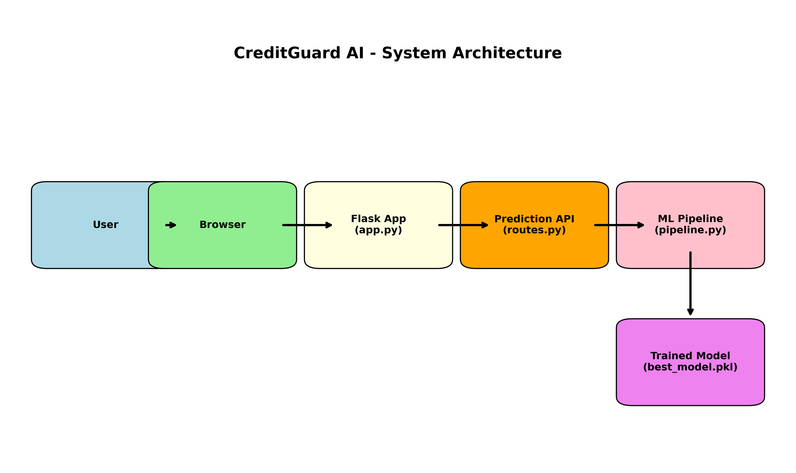
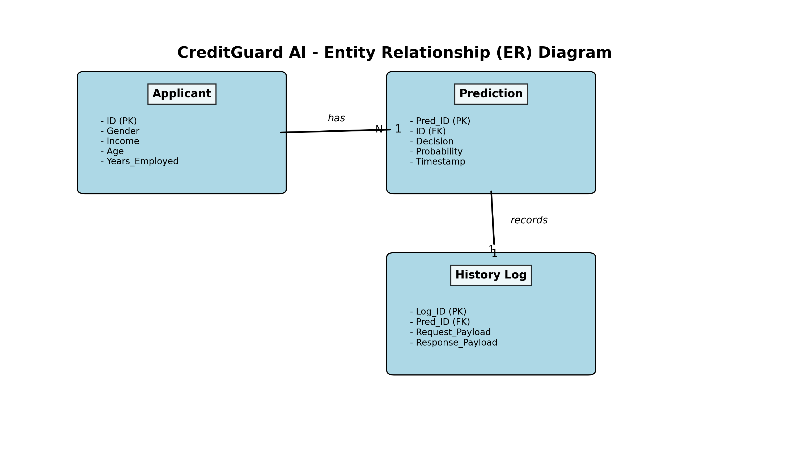
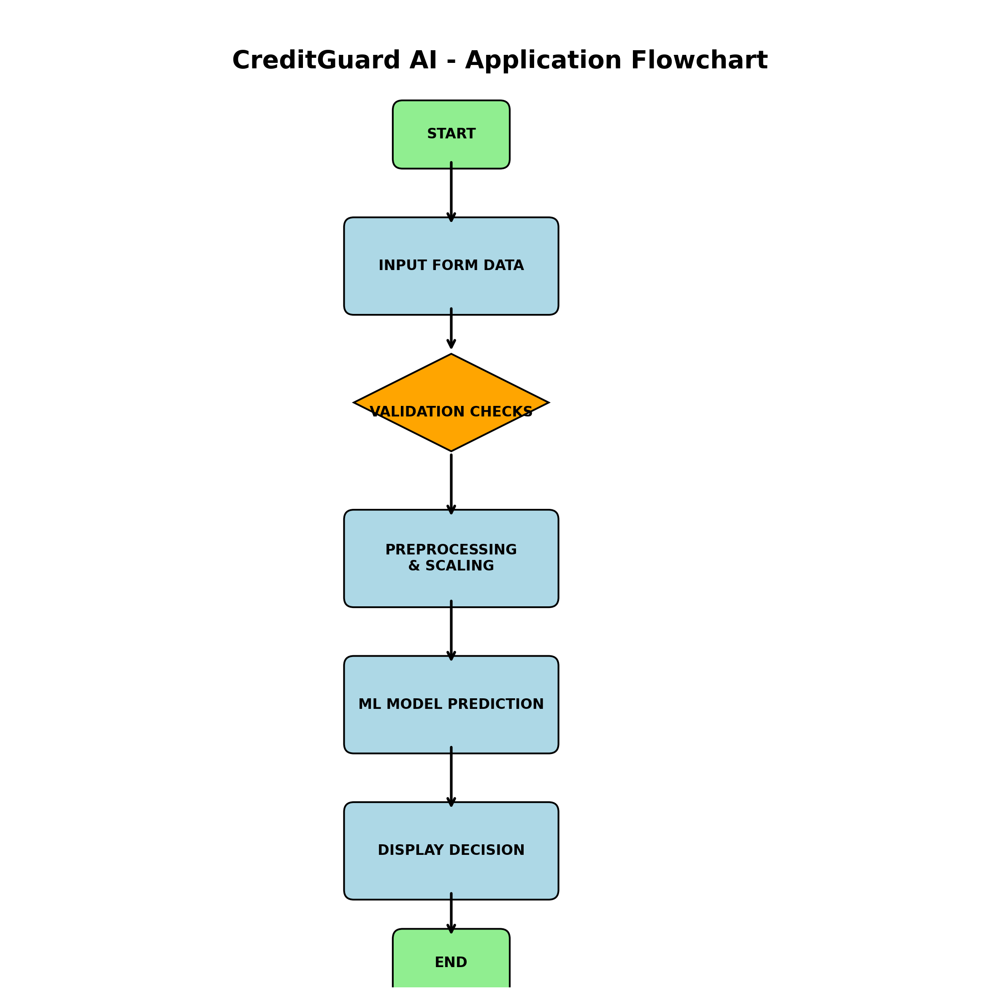

Illustrates the system layers: data loading, preprocessing pipelines, model training registry, and the Gunicorn flask application backed by SQLite persistent history storage.

Documents dataset table schemas, primary keys, and data relationships linking demographic profiles with credit records.

Outlines the processing steps: data cleansing, outlier capping, feature selection metrics, model training, cross-validation, and production serialization.